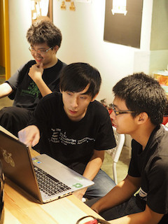
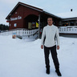
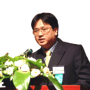
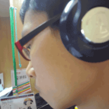
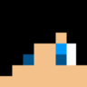
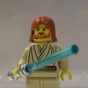
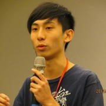
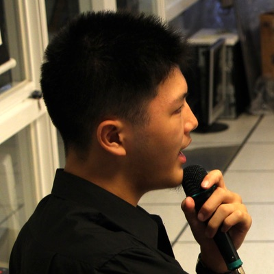
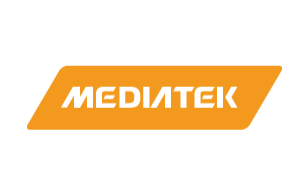
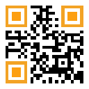

主題介紹
The True Hackers

今年的活動主題「The True Hackers」，將聚焦於真正的駭客精神。駭客發源於80年代的 MIT 人工智慧實驗室，其對抗壟斷、反抗權威、推崇自由開放、重視技術實作的精神至今在世界發揚光大。初代駭客們更相信資訊不應被壟斷，致力於將電腦普及，他們相信電腦可以改善人的生活，電腦不應被鎖在企業與政府的層層權威與官僚當中。
為了避免資訊科技落入政府與大企業的壟斷之中，駭客們提倡分散式與開放的系統，他們更預見資訊科技的全面普及，雖然可以為人類帶來眾多便利，但若資訊科技的力量被政府和企業壟斷掌控，便會形成一個各方面都被監控的社會。他們的洞見在史諾登揭露 NSA 全球全面性無差別的竊聽計劃之後被證明不是危言聳聽。
現今駭客們更加大聲地疾呼隱私權的保障，以捍衛最基本的人權—自由。除此之外，他們的理念也影響了諸如自由軟體、開放政府、資訊安全與自造者運動等多種領域。這次的年會除了延續之前的理念推廣外，也希望讓參與的學生與民眾了解駭客精神的真諦思想，與駭客精神在各種不同領域的展現。
Keynote
|  |
Kaede - We hack worlds今年的第一場 Keynote 邀請到 PTT 創站站長暨水球發明人 - Kaede，來分享他多年來參與網路通訊等改變台灣與世界的各種事件，其背後的來龍去脈與奇聞軼事，講者也曾經和自由軟體之父 RMS 近距離接觸，除了瞭解 RMS 自由軟體運動背後的駭客精神，更對於駭客精神有親身體悟。「軟體就是媒體，程式就是法律」，How do we hack the world? 你絕對不能錯過。 |
|  |
BS.Liang - Evolution of The Internet 互聯網的演進網路，這個在我們生活中最不可或缺的發明，它帶動了資訊科技的蓬勃發展，也連結了 全球各地的人們。身為學生的我們，如果沒有宿網會是如何呢？你知道全臺灣第一個宿網—交大宿網，其實是學生社團和老師共同推動建設的嗎？我們邀請到學生時代創立交大 CCCA （校園網路策進會）、對台灣早期學術網路貢獻良多的梁伯嵩先生來分享建立全臺灣第一個宿網，並推廣 Internet 和電腦的經過。 |
其他議程
|  |
Maeglin - Aerodox - a mobile-based mouse如果是你，你想要怎麼操控筆電呢？用滑鼠、觸控板不夠看了，手機也可以！雖然市面上早已有了類似的 app 可以使用，但多半功能不齊全。經由講者與他的夥伴研究改良，突破了一些障礙如飄移現象、傳輸即時性等問題。下午兩點半在國際會議廳，一起來聽聽他們在過程之中學到的事物吧！ |
|  |
海豹 - Google Code-In 開源，從小開始開源開源，到底該怎麼開始呢？年僅十五歲的講者在去年夏天經由 SITCON 夏令營認識了 Open Source 之後，從此開始他的開源之路，也完成了許多作品。Google Code-In 是 Google 為了鼓勵全世界 13~17 歲學生參與開放原始碼所辦的比賽，透過與各大開源社群出題，給學生許多實務性的任務（包括程式、文件撰寫、資料研究…等）去完成，最終贏家還會得到一次去美國加州山景城 Google 總部的來回旅程。快來一睹風采吧！ |
|  |
Pellaeon - 柏林的駭客們：程式、啤酒與自由你相信這個世界上，真的有一個城市甚至一個國家，處處都在 hack 嗎？駭客精神的兩大核心：謹慎懷疑、務實性格，從飛機、衛星通訊、到作業系統樣樣都駭，這情景在德國處處可見。本議程將介紹在柏林參加黑客松交流的心得、聚會中的見聞、柏林的氛圍、資訊圈和社群的狀況，一起跟著講者開瓶啤酒，一窺德國人的駭客精神吧！ |
人物專訪
|  |
總召 MouseSITCON 一轉眼就踏入了第三年，今年年會我們仍秉持著不收費的原則，也因投稿太過熱烈加開了第四軌議程，還有其他新嘗試等著大家來到現場體驗囉！ |
|  |
副召 RSChiang針對今年的年會，我想一直以來我們對 SITCON 的期許，都是能夠在學生搭建的舞台上、展現屬於學生的耀眼光彩； 而第三屆的年會便是我們在提升年會質與量上的首度嘗試。 我們常常在思考該如何跨出社群界、觸及籌備人員交友圈外的更多學生們，而透過各式的 定期聚與工作坊，我們正在朝遍地開花而努力著。 今年的年會不會是一年煙火秀的結束，而是引領學生自作風氣的開始；這是我所相信的 SITCON。 |
贊助單位
|  |
MEDIATEK 聯發科技股份有限公司聯發科技是全球前三大 IC 設計公司，佈局前瞻技術，致力提升及豐富大眾生活 全球 27 個據點，體驗跨國合作的最佳平台，提供超過 600 個軟體及暑期/在學實習機會，歡迎你加入一起創造無限可能！ |
 認識聯發 |